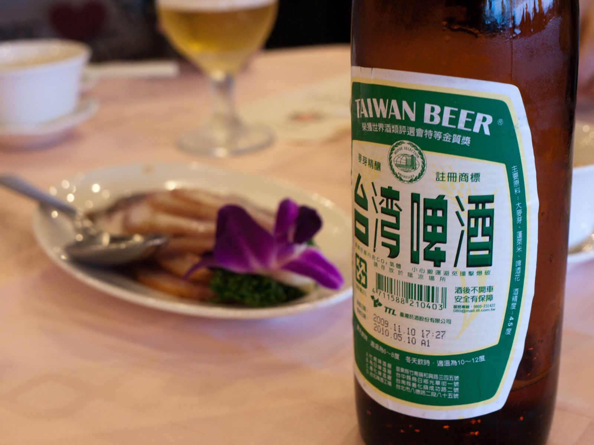
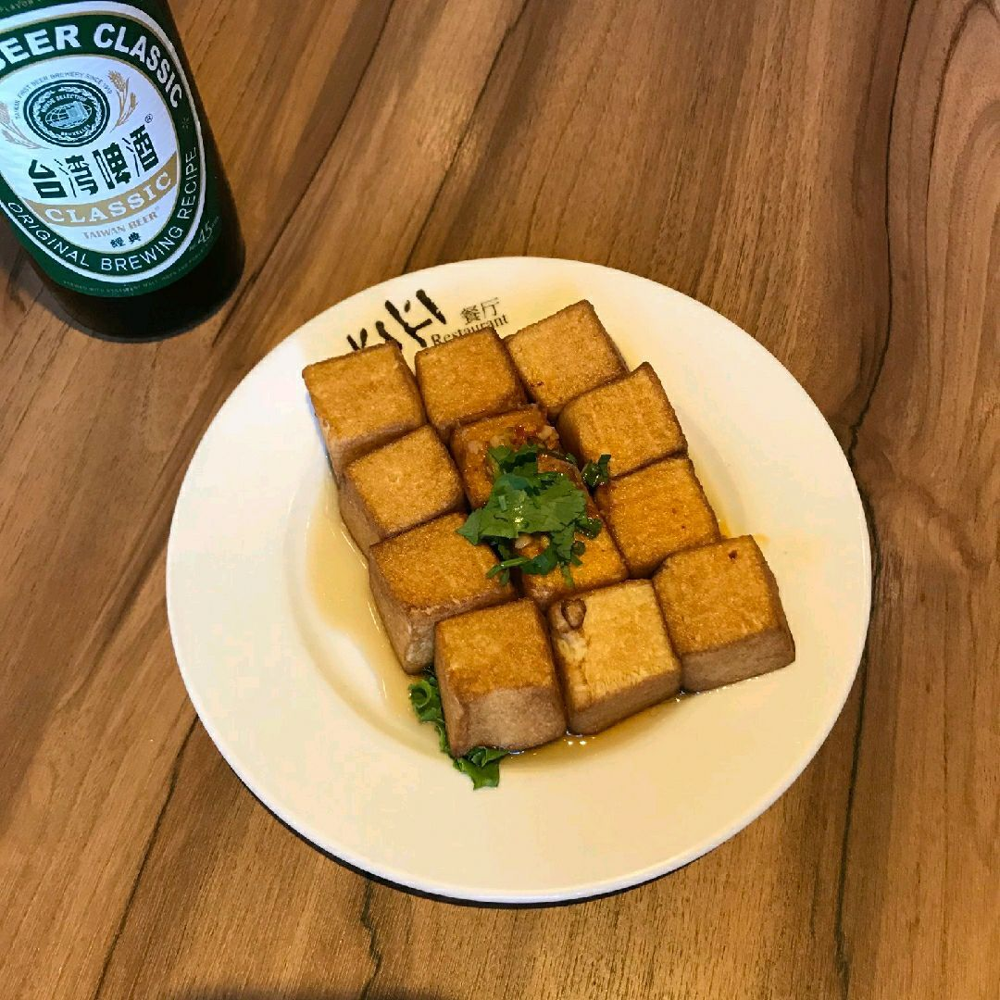

대만 식당 콜키지, 술 가져가기 전에 뭘 물어볼까?
"술 가져가도 돼요?" 한마디면 돼요 — 그래도 병마다 서비스료를 받는 식당이 있으니 먼저 확인하세요.
게시 · 수정
대만 식당 콜키지, 따로 받을까요? 여행자 커뮤니티 답변을 보면 술을 팔지 않는 식당은 편의점에서 산 술을 가져와도 대체로 너그럽다는 의견이 많아요. 다만 식당마다 다르고, 병마다 콜키지(자체 반입 서비스료)를 받는 곳도 있다는 답변이 있어요. 실제로 타이베이의 대만 요리 체인 欣葉(신예) 일부 지점은 온라인 예약 안내에 '自備酒水服務費'를 병 단위로 적어 두었어요. 술을 가져가기 전에 무엇을 확인하고 어떻게 물어보면 좋은지 2026년 10월 기준으로 정리했어요.
01 · 대만 식당 콜키지, 한눈에 보기
| 상황 | 알아둘 점 (2026년 10월 기준) |
|---|---|
| 술을 팔지 않는 작은 식당 | 편의점 술 반입에 너그러운 편이라는 여행자 답변이 많지만, 가게마다 달라요 |
| 예약을 받는 큰 식당·체인 | 예약 안내에 자체 반입 서비스료(自備酒水服務費)를 적어 둔 곳이 있어요 |
| 요금 기준 | 欣葉 일부 지점 예약 안내 기준 병마다 받고, 와인·음료와 독주의 기준이 달라요 |
| 음료도 해당될 수 있음 | 같은 안내에 '飲料(음료)'도 함께 적혀 있어요. 술이 아닌 음료를 가져갈 때도 확인하세요 |
| 금액 | 가게마다 다르고 바뀔 수 있어요. 방문 전 예약 페이지나 가게에 직접 확인하세요 |
핵심은 '가져가도 되는지'와 '돈을 받는지'를 따로 물어보는 것이에요. 반입을 허락하는 식당도 병마다 서비스료를 받을 수 있어서, 계산할 때 놀라지 않으려면 둘 다 확인하는 편이 좋아요.

02 · 콜키지 있는지 미리 확인하는 곳
온라인 예약 페이지의 안내문 TableCheck 같은 예약 페이지에는 가게가 직접 쓴 안내문이 붙어 있어요. '自備酒水', '開瓶費'라는 단어가 있는지 찾아보세요.
예약 메모란에 적기 예약할 때 메모란에 술을 몇 병 가져갈 예정인지 적어 두면, 가게가 안 된다거나 요금이 있다고 미리 알려줄 수 있어요.
예약 없는 가게는 들어가서 바로 작은 식당은 앉기 전에 카운터에서 병을 보여주며 물어보면 돼요. 거절하면 가게 안에서 파는 술을 주문하면 돼요.
훠궈·뷔페는 따로 확인 코스나 무제한 음료가 있는 가게는 반입 규칙이 다를 수 있어요. 메뉴판이나 예약 안내를 먼저 보세요.
03 · 술 반입 전에 쓰는 중국어 한 문장
請問可以自己帶酒嗎？ 칭원 커이 쯔지 다이 지우 마? — "술을 가져와도 될까요?"
有收開瓶費嗎？ 여우 서우 카이핑페이 마? — "콜키지(병 따는 비용)를 받나요?"
一瓶多少？ 이 핑 둬사오? — "한 병에 얼마예요?" 요금이 있다고 하면 이어서 물어보세요.
可以給我們杯子嗎？ 커이 게이 워먼 베이쯔 마? — "컵 좀 주실 수 있나요?" 반입이 된다면 컵을 따로 부탁하면 돼요.

04 · 대만 식당에 술 가져갈 때 매너
허락을 먼저, 병은 나중에 묻기 전에 병부터 따지 마세요. 여행자 답변에서도 가게마다 다르니 먼저 양해를 구하라는 의견이 많았어요.
가게 술도 하나쯤 주문 가게에서 술을 판다면, 가져간 술만 마시기보다 맥주 한 병이라도 함께 시키면 분위기가 한결 편해요.
빈 병은 정리해서 다 마신 병은 테이블 한쪽에 모아 두거나 직원에게 어떻게 버리면 되는지 물어보세요.
영업시간 확인 늦게까지 마실 생각이라면 방문 전 구글맵에 등록된 영업시간을 확인하세요.
식당에서 술을 주문할 때의 매너와 미니어처 술 선물, 한국 입국 면세 한도는 대만 식당 술, 가져가도 될까? 글에 따로 정리해 두었어요. 술을 사 갈 곳은 대만 주류샵 모음과 타이중의 성태양주(星泰洋酒) 상세 페이지를 참고하세요. 술과 잘 어울리는 식당은 타이베이 맛집 지도, 타이베이 대만식 맛집, 타이베이 훠궈 맛집에서 고르고, Sixty Years of Dining처럼 상세 페이지에서 위치를 확인한 뒤 가게에 직접 물어보세요.
지도에서 대만 맛집을 찾아보세요
술과 함께하기 좋은 식당을 지도에 찜해두고, 가기 전에 반입 여부를 물어보세요.